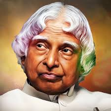

Dr. APJ Abdul Kalam, affectionately known as the "People's President" and the "Missile Man of India," left an indelible mark on the nation through his exemplary life and contributions. Born on October 15, 1931, in Rameswaram, he rose from humble beginnings to become a renowned aerospace engineer, scientist, and the 11th President of India. Dr. Kalam played a pivotal role in India's space and defense programs, notably spearheading the Pokhran-II nuclear tests. Beyond his scientific achievements, he was a visionary leader who inspired millions with his wisdom and simplicity. His famous words, "Dream, dream, dream. Dreams transform into thoughts and thoughts result in action," continue to resonate, encouraging generations to pursue their aspirations. Dr. APJ Abdul Kalam's legacy lives on as a beacon of inspiration, embodying the spirit of resilience, innovation, and service to humanity.